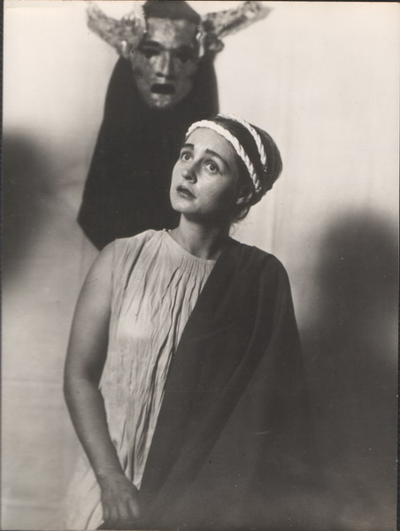
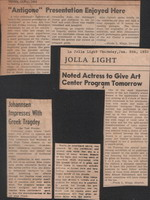
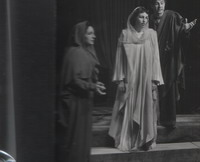
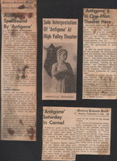
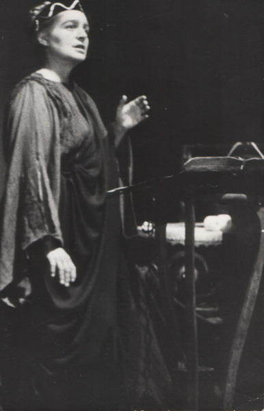
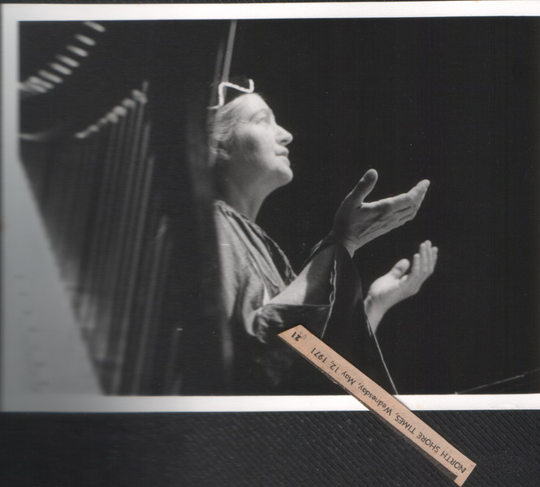
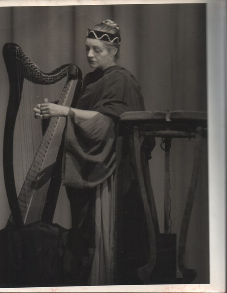

In 1953, after her husband’s death, Mechthild Harkness created Sophocles’ Antigone as a solo performance with which she toured America and Europe. After coming to Australia in 1969 she revived her production, playing at the Q Theatre and other venues in and around Sydney. The images on this page cover a range of productions.

Early performance of Antigone
…exquisite, fascinating sensibility. The spectators were deeply and utterly moved. — National Zeitung, Switzerland
Early performance of Antigone
Mechthild Harkness has not only fine artistry, but a compelling presence that gives authority and meaning to her characterization. — Santa Barbara News Press, USA
Program for London performance
…rival of Ruth Draper, she managed without effort to reconstruct by gesture, intonation and mime the soul of each of her characters. — Les Nouvelles Littéraires (Gabriel Marcel), Paris
A style of playing of exceptional quality where the gesture is of rare beauty … a grandeur and simplicity of which one knows few examples in Paris. — Arts
1953
JOHANNSEN IMPRESSES WITH GREEK TRAGEDY Tom Proctor, Ojai Valley News
Sophocles’ tragic drama, Antigone, was given an unusual and effective presentation by Mechthild Johannsen last weekend at the High Valley Theatre. In an ambitious one-man show Miss Johannsen depicted characters, chorus and played her own compositions of incidental music. The production is well conceived, and as an actress Miss Johannsen shows admirable facility as she moves swiftly from one sharply delineated character to the next, achieving her effects through her flexible vocal ability and remarkable grace of costume and body movement. The poignant scenes between Antigone and her sister, Ismene, were particularly good, as was the characterization of the old king, Creon. Music as mentioned above, was created by the performer, and proved once again that she is a woman of many talents. Sounds of the harp and varying sizes of recorders were contrasted with the brazen notes of a gong and drum beats in beautiful melodic patterns, or formal dark and foreboding accompaniments for the tragic words of the classic. As a tour-de-force, Miss Johannsen has chosen a vehicle and a medium for which she is admirably suited. The production is an excellent one.
Ojai program

American review page
La Jolla Light, Thursday, Jan 15th, 1953
Antigone Presentation Enjoyed Here
A very enthusiastic audience attended the unusual presentation of Antigone at La Jolla Art Centre last Friday evening. Mechthild Johannsen, by use of her remarkable voice color and range, her adequate but never superfluous gesture and the mere shifting of a scarf portrayed all the characters in the Dudley Fitts and George Fitzgerald translations of Sophocles’ great drama. She gave each one his peculiar setting: played on reed instruments for intervals: emphasized descriptions by playing on a small Irish harp and strengthened dramatic effects by beating a drum or cymbal. Her range of characterisation made possible even physical differences for in directly dialogue the transformation from the distraught young girl Anigone to the robust and cruel Creon was readily visualized and accepted. Spectators, as tragedy followed tragedy, waited with fascination the inevitable climax and the just punishment of the man who abused his powers and nursed an arrogant pride… The Greek story, the originality of its presentation, and Miss Johannsen’s superb performance gave members of the Art Center a memorable evening. (Freda L. Klapp)

Production - unknown date
Introduction to the dramatic presentation of Antigone by Sophocles …from programme notes
The tragic events centered around Oedipus, King of Thebes, culminate in the third drama of Sophocles’ trilogy in the doomridden figure of Antigone, daughter of Oedipus. The story begins with Oedipus, left in the wilderness at birth by his royal father, King Laios of Thebes, in the attempt to prevent a prophecy from being fulfilled. Found, rescued and brought up in a foreign court, Oedipus returns to his native city, unknowing of his true origin. On the journey he kills his father and after solving the riddle of the Sphinx that holds thrall over Thebes, he is proclaimed King and given the widowed queen, Iocaste — his mother — for his wife. Four children spring from this marriage: two sons, Eteocles and Polyneices and two daughters, Antigone and Ismene. When the truth becomes known Iocaste hangs herself and Oedipus puts out his own eyes. He is later deposed from the throne by his sons and goes begging on the roads with Antigone, to his death in exile.
The two sons agree to share in the rule of Thebes, each to reign in alternate years. But their father’s curse, which they incurred when deposing him, determines their fate. When Eteocles has ruled a full year he refuses to relinquish the throne to his brother. Polyneices then calls upon the Argives to support his cause and sets forth to besiege his native city with the Argive army. When neither side seems to be winning the two brothers agree to fight it out single handed. In the ensuing combat they kill each other and the Argive host withdraws from the siege.
Creon, uncle of Oedipus’ children, now becomes king. The scene is still Thebes, the public square before the palace. The ensuing action is divided into three parts and takes place between dawn and dusk on the day after the fatal battle between the two brothers.
Audiences Spellbound by Antigone Monterey Peninsula Herald, September, 1953

American review page
A Saturday night audience which filled every seat in the Golden Bough Players’ Circle sat spellbound as Mechthild Johannsen gave an inspired interpretation of one of the world’s great classical tragedies. In her solo performance of Sophocles’ Antigone, Miss Johannsen admirably recreated a diversified cast of characters and managed to preserve all the dignity and majesty of a full production. The text used by Miss Johannsen is a Dudley Fitts and George Fitzgerald translation, its five scenes woven into an impressive tapestry by music of her own and Leopold van der Pals composition — performed with skill and infinite grace on harp, flute, gong and kettle-drum.
Antigone, the third in a cycle of ancient Greek tragedies beginning with Oedipus Rex, dramatizes the conflict between an edict by the gods and an ultimatum of a tyrant. While the situation, that of a young girl caught between a law of the gods demanding that she perform funeral rites for her slain brother and the threat of death at the hands of her kingly uncle is she does so, seems long outmoded, the underlying theme of the play and the lines through which it unfolds are as timely as today’s newspaper.
Miss Johannsen is not only an experienced actress, but one exceptionally well equipped with beauty of voice and feature. Her interpretation of Antigone showed a rare depth of understanding and sensitive appreciation of her material. It seems a great pity that this one woman show of Antigone should be given only a single performance here. (Irene Alexander)

Sydney production
Sydney Productions

Sydney production

Sydney production
Curtain Up
Solo performance by Mechthild Harkness of Sophocles’ Antigone at the Boama art centre, Chatswood.
Mrs. Harkness has toured America, England and Switzerland with this performance, which shows the depth of her talent.
The tragedy of Sophocles’ work was fully explored by Mechthild Harkness’ interpretation of each of the main characters. She in turn was Antigone, her sister Ismene, King Creon, his son Haimon, the blind prophet Teiresias, the sentry, the messenger and the chorus.
The performance was a masterpiece of understatement with a bare setting, a single costume with versatile drapes and three musical instruments — a drum, cymbals and a harp, on which the actress played to heighten the effect of the chorus.
Almost with a single gesture, she conjured up the picture of ancient Greece, the city of Thebes and the dry earth on which the unburied Polyneices lay.
In a performance of sustained power, Mechthild Harkness developed the sense of impending doom into ultimate tragedy with the death of Antigone, Haimon and Euridice. Her gift for creating the reality of the past into the present comes into the realm of really great theatre. — North Shore Times, 1971

![Programme for a London performance at Rudolf Steiner Hall — RUDOLF STEINER HALL 35 PARK ROAD, LONDON, N.W.1. ear Malee Sieces Siste On Thursday, October Sth, at 7.30 p.m. MECHTHILD HARKNESS of the Goetheanum Stage Group. Dornach, Switzerland) PRESENTS THE ANTIGONE OF SOPHOCLES as a Solo Performance with MUSIC & MIME TICKETS at door, or in advance from Rudolf Steiner Bookshop, 35, Park Road, N.W.I (PAD 9514) Some Press Notices: SWITZERLAND VationolZeiruer Taserstonesessinstoners GO GASH “Giornale der Popolo' Her expressive gestures and singing. which rang pure as a bell, lent a special charm to her playing ITALY “II Marrino Dell' Italia Centrale linear style and fare punty. USA Neve Press Markocss has not only ane artistry, but](image/1/SF0FRJl7QkLpjKhnY5OaTQ72098/GW454H600.jpg)
![Programme with press notices for a High Valley Theatre production — ANTIGONE AN INTERPRETATION WITH MUSIC AND MiNE PARIS 'Les Nouvelles Litteraries' Gabriel Marcel rival of Ruth. Draper, she managed without effort to reconstruct by gesture intonation and mime the soul of each of her characters the marD, sne sank with the most pure voice don't know what melody perfectly suited to cue sacuacion. A style of playing of exceptionat quality where the gesture is of rare beauty breathtaking . . . a grandeur and simplicity of which one knows few examples in Paris GERMANY “Weser Kurier' unpretentious and above all Inwardly filled, that is how theater should always be played. The audlence forgot time and space, became a eye and ears a rare and intense experience. “Bremer Nachrichten' Mechthild Johannsen, superb artist and brilliant verformer. 'Hamburg Presse A revelation of the true art of acting. hardly expected and rarely seen. Thought, feeling and word became image before our eyes. shattering and marvelous, the split. second transformations of voice. expression and movement SWITZERLAND National Zeitung risite, fascinating sensibility. The spectators were deenyandutterly-moved *Giornale der Popolo Her expressive gestures and SInKIDE. which rang pure as a bell, lent a special charm to her playing. “Basler Nachrichten' •mackenole power octransformation artist of original and most powerful talent. A wbole ITALY TI Martino Dell Irela linear style and 'La Nazione exceptional artist ing magic. Nuoto Corrieré' revealing with extrea the infinite fantasy Copeau dreamed of. UNITED STATES Los Angeles Times her acting a veritable pus Santa Barbara News Prei Rondle D. S humble yet queenly quiet grace, speaking wits and singing with simple lyric There was richness nuance of expression hat too rarely In the theater nsen has a wide range of and piten in ner roles, in a few eloquent lines, ments of restrained pantomine, a character of such vividness in ones memory or rears. Miss Johannsen has not onis. but a compelling presence that tires ority and meaning to her characteria 'Santa Barbara Star' It has not often been our chances ness more perfection and finesse “Ojai Valley News Top honors to Mechthild Johannsen sensitive and finely drawn portaryal Her grace of movement. mobility of a pression, without once overstepping confines of the character she paved. wer impressive to a high degree. MANAGEMENT OF HAMILTON BINGHAM, HIGH VALLEY THEATER, OJAI](image/1/CnKbfq8vCvn2oKnlnTAA7g456191/GW623H851.jpg)